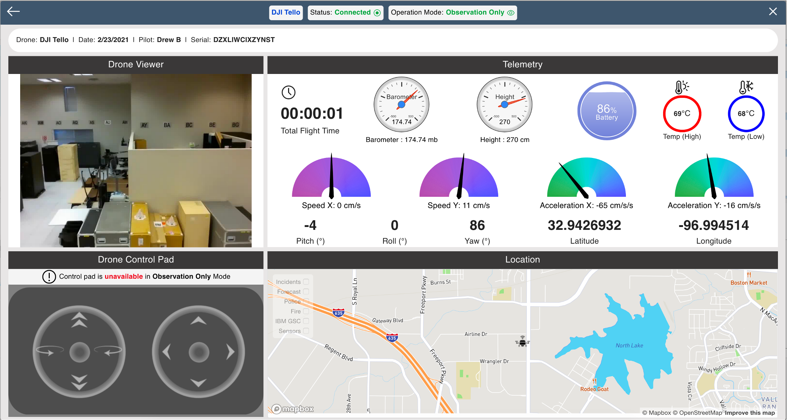
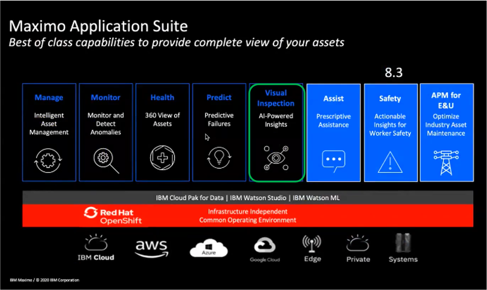
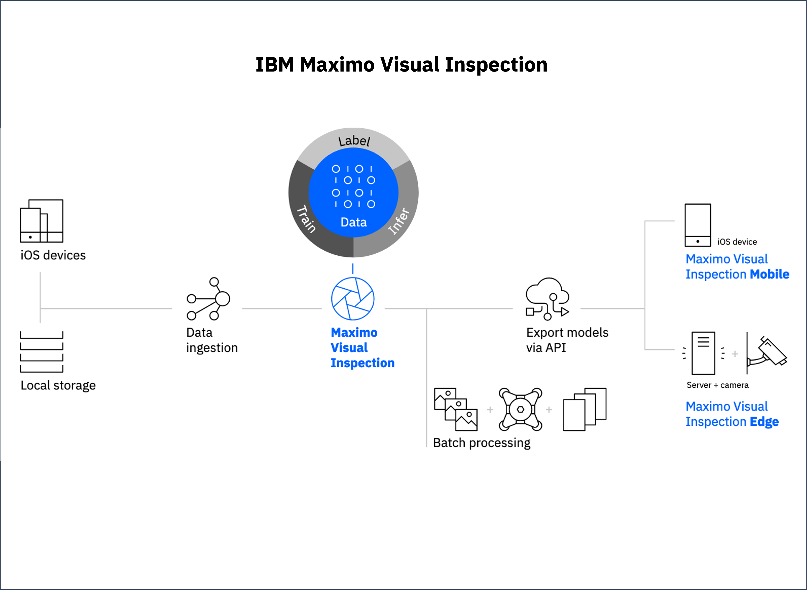
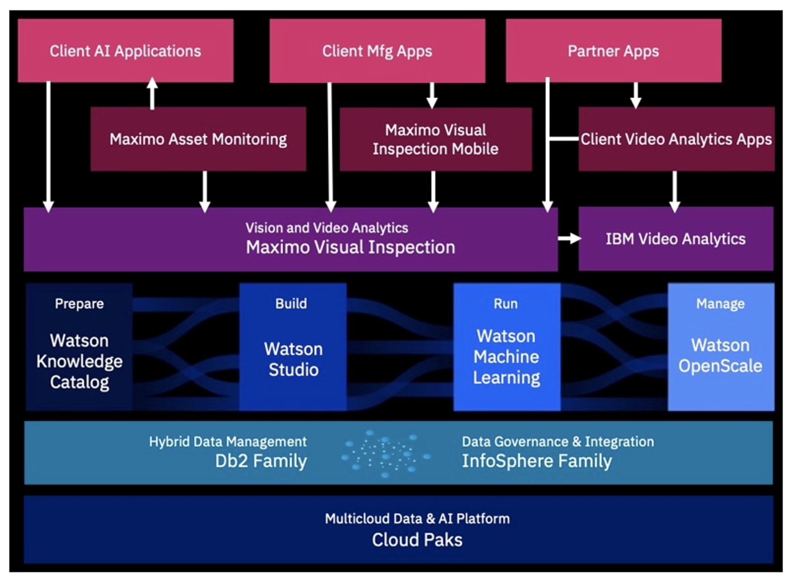
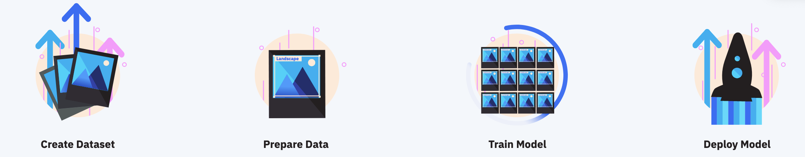
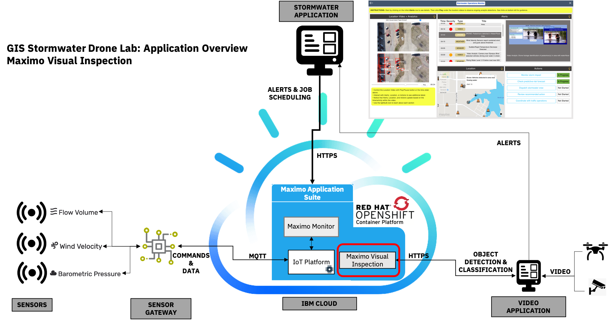

Lab Slack channel - post questions & more ⇒
Lab Slack channel - post questions & more ⇒1. Understand how Maximo Visual Inspection can be trained to detect objects within a video/image
|
You may recall that in Drone Lab 2, you were able to view the data from a drone within the GIS Private Cloud environment via the Remote Drone Console application running in IBM Cloud SBaaS (image on the right). This drone data included images captured by the drone camera, along with various telemetry and measurements. If you would like to review the specific data the drone sends back, you can review the details here, which are excerpted from Drone Lab 2. |
 |
Our Remote Drone Console Operators can further gain insights from drone imagery using IBM Maximo Visual Inspection to analyze the drone images using classification or object detection. Based on trained models, multitudes of images sent by many camera/drone sources can have analytics applied in order to quickly and effectively identify patterns or problems. This allows operators to focus on the insights across sources rather than trying to try to monitor raw imagery.
In our stormwater management use case, you can imagine how critical it is for operators to maintain some level of situational awareness. They must be able to assess risks during disruptive weather events when dangerous conditions can impact traffic and directly threaten the safety of citizens and first responders. In this step, you will explore IBM Maximo Visual Inspection, and ultimately consider how its powerful analytics can be leveraged to raise insights about stormwater in close proximity to vehicular and pedestrian traffic that can help assess and prioritize the public safety response.
More about IBM Maximo Visual Inspection (MVI) |
|
|
You recall that MVI is just one of the powerful capabilities within the overall Maximo Application Suite portfolio that performs visual inspection of assets to get immediate, actionable insights about emerging issues. MVI is intelligence that drives automation of existing manual processes in addition to enabling subject matter experts to easily and quickly use AI computer vision, in order to build highly accurate customized AI models. It also is compatible with Edge and mobile. You can imagine how important it is to identify issues which may have been missed during normal inspection and preventive maintenance cycles for life-threatening situations that involve public safety. Often, challenging operating environments in the field exist as well. As a result, adding a level of intelligent oversight that can look for errors 24/7 in the operations or output of an asset can be very beneficial. MVI uses the power of AI to detect errors and defects, with alerts to operators to take action, avoiding disruptions that could take down operations. |
 |
|
Maximo Visual Inspection includes the following key features: |
 |
|
Architecture overview A Note about GPUs: |
 |
As you progress through this step of the lab, you will be guided through the creation, preparation, training, and deployment of a model in Maximo Visual Inspection. Once you’ve walked through the process, you will interact with a Maximo Visual Inspection (MVI) test page that was created to allow you to experience and consider how an external application can interact with an MVI model that has been trained to detect objects from drone images, traffic cameras, and other video sources that would be relevant to stormwater operators.
Reference:
Indicated as text with light blue background.
Example:
It's important to read each step carefully and in order.
Skipping sections, reading too fast, or not clicking to read
may result in incomplete learning.
✅ IBM Maximo Visual Inspection: Visual Annotation
✅ IBM Maximo Visual Inspection: Model training
✅ IBM Maximo Visual Inspection: Deploy the model
✅ IBM Maximo Visual Inspection: Using the model
|
Step 1
In Progress
☑ IBM Maximo Visual Inspection: Getting started ☑ IBM Maximo Visual Inspection: Visual Annotation ☑ IBM Maximo Visual Inspection: Model training ☑ IBM Maximo Visual Inspection: Deploy the model ☑ IBM Maximo Visual Inspection: Using the model |
→ |
Step 2
☑ Maximo Monitor: IoT Tool Device creation ☑ Maximo Monitor: IoT Tool Interface definition ☑ Maximo Monitor: IoT Tool Device connection & Device simulation ☑ Maximo Monitor: Dashboards and alert triggers for device monitoring ☑ Review Maximo Monitor & IoT Tool |
→ |
Step 3
☑ Explore Remote Drone Console Application Stormwater Operations ☑ Final Notes |
1.1 IBM Maximo Visual Inspection: Getting started
Given a corpus of existing video footage and imagery taken from drones, traffic cameras, and even citizen uploads, IBM Maximo Visual Inspection (MVI) was designed to allow technical or non-technical subject matter experts (like Stormwater Management operators) to produce an object detection model that can help find insights when processing future images. This is possible because MVI has a very guided and intuitive user interface, starting with the concept of creating a new data set from a corpus of images or video.
Below is a video walkthrough of the data set creation process that explains step-by-step how the user can navigate through the MVI interface, starting immediately after logging in. The video is being served via Watson Media’s Video Streaming service, and you should notice that Closed captioning has been provided. (You can click "CC" on the video to enable/disable).
HINT: If text in the video is difficult to read, you can make the video fullscreen and/or click "HD" and select the highest quality.)
As you watched this video, hopefully you were able to identify these key points:
Check all of the boxes before moving on.
For full details of this step, you can also reference the corresponding section in the MVI knowledge center.
1.2 IBM Maximo Visual Inspection: Visual Annotation
Once the user has captured frames (either manually or using MVI’s auto-capture capability) in the new data set based on the imported images or video, the user can now start to annotate those frames by labeling the objects that should be detected in future images. An object is used to identify specific items in an image or specific frames in a video. You can label multiple objects in an image or a frame in a video. An example of objects in an image of cars might be a wheel, headlights, and windshield. In our stormwater use case, we will be labeling vehicles, water, flooding, people, buildings, etc.
Image Classification can be used to build a solution that can examine an image and properly classify it according to your model. For example, the model can examine images of a flooding situation and can classify if the flooding is happening on a road or low-level water crossing bridge and thus helps to determine the flooding severity. In the above use case, you train a model to recognize flooding happening on a road versus low-level water crossing bridge categories.
In this lab, we use Object Detection model rather than Image Classification model to determine if a vehicle is passing through a flooded region by examining the image for a vehicle object, water, and splashes around the wheels of the car. If all of the above objects are detected in an image, the system can determine that a vehicle is passing through a flooded region which is one of the main public safety issues during stormwater monitoring.
In the video below, you will learn how to create an object detection model by labeling objects. The video initially shows how to label a vehicle and flooding object and later uses a trained deployed model to auto-label the entire data set. This is a unique feature of MVI. In the real world, based on your scenario, you will train the model with objects that you think are appropriate for detection and this might result in some false positives (a false positive result is when IBM Maximo Visual Inspection labels an image when it should not have - for example, detecting an A/C unit on top of a building as 'vehicle' in the drone video). The users have to create new labels (e.g 'A/C unit') to re-train the model to avoid false positives. Determining what objects to label can be an iterative effort, and is often based on an understanding of what type of object is present in the images that you are using in order to train the model.
Below is a video walkthrough of the data prepation process that explains step-by-step how the user can navigate through the MVI interface, starting immediately after data set creation. The video is being served via Watson Media’s Video Streaming service, and you should notice that Closed captioning has been provided. (You can click "CC" on the video to enable/disable).
HINT: If text in the video is difficult to read, you can make the video fullscreen and/or click "HD" and select the highest quality.)
As you watched this video, hopefully you were able to identify these key points:
Check all of the boxes before moving on.
For full details of this step, you can also reference the corresponding section in the MVI knowledge center.
1.3 IBM Maximo Visual Inspection: Model training
Once the user has annotated the desired objects via labels within the frames in the data set, the user is now ready to use those labeled frames to train the MVI model. A model is simply a set of tuned algorithms and that produces a predicted output. Models are trained based on the input that is provided by a data set to classify images or video frames or find objects in images or video frames. There are additional training concepts and terminology involved (iteration, batch, batch size, epoch, etc.), but it is not necessary for a user to become an expert in these concepts within MVI to produce a model.
Below is a video walkthrough of the Train Model process that explains step-by-step how the user can navigate through the MVI interface, starting immediately after the Prepare Data has been performed to define the objects to be detected. The video is being served via Watson Media’s Video Streaming service, and you should notice that Closed captioning has been provided. (You can click "CC" on the video to enable/disable).
HINT: If text in the video is difficult to read, you can make the video fullscreen and/or click "HD" and select the highest quality.)
As you watched this video, hopefully you were able to identify these key points:
Check all of the boxes before moving on.
For full details of this step, you can also reference the corresponding section in the MVI knowledge center.
1.4 IBM Maximo Visual Inspection: Deploy the model
Once the user has trained the model with the desired objects via labels within the frames in the data set, the user is now ready to deploy that model to create a unique API endpoint based on that model for inference operations. The deploy process was designed such that it can be executed via a single click. Once deployed, external applications (such as the Stormwater Management function within our Remote Drone Console) can programmatically interact with the MVI model API via the associated API key and API endpoint.
Below is a video walkthrough of the Deploy Model process that explains step-by-step how the user can navigate through the MVI interface to deploy and test the model, starting immediately after the model was trained. The video is being served via Watson Media’s Video Streaming service, and you should notice that Closed captioning has been provided. (You can click "CC" on the video to enable/disable).
HINT: If text in the video is difficult to read, you can make the video fullscreen and/or click "HD" and select the highest quality.)
As you watched this video, hopefully you were able to identify these key points:
Check all of the boxes before moving on.
For full details of this step, you can also reference the MVI knowledge center about deployment and testing.
1.5 IBM Maximo Visual Inspection: Using the model
|
As you saw in previous walkthroughs, IBM Maximo Visual Inspection (MVI) is a powerful tool that enables even non-technical users to create and deploy custom AI models that can then be used to perform visual analytics on images or video. After deploying the model, you saw that it can be tested within the MVI interface, but it is important to consider how that model can be leveraged by external applications. For example, our Remote Drone Console Application will use the MVI API to detect objects from the drone images during a weather incident and then use those insights to facilitate situational awareness and raise alerts about potential threats from a public safety context. In this next step, a test page has been created in order for you to explore how an external application can interact with IBM Maximo Visual Inspection to identify objects from an image. The test page will contain various activities that will demonstrate IBM MVI capabilities, in addition to further information on the service and how the test page was created. |
 |
Click the blue button below to navigate to the test page in a new tab. Once you have completed all the activities on the test page, it will prompt you to return to these instructions. Click the checkbox underneath the button to move on when you are ready.
I have completed the above activities on the test page.
Finish Step 1
✅ IBM Maximo Visual Inspection: Visual Annotation
✅ IBM Maximo Visual Inspection: Model training
✅ IBM Maximo Visual Inspection: Deploy the model
✅ IBM Maximo Visual Inspection: Using the model
In the next step, you will explore IBM Maximo Monitor and its IoT Tool (Watson IoT Platform). You will consider how Stormwater Management Operators can also leverage sensor data (weather, water/stream, etc.) with the help of IBM’s capabilities available in Maximo Monitor to deliver insights from raw measurements.
|
Step 1
Completed ✅
☑ IBM Maximo Visual Inspection: Getting started ☑ IBM Maximo Visual Inspection: Visual Annotation ☑ IBM Maximo Visual Inspection: Model training ☑ IBM Maximo Visual Inspection: Deploy the model ☑ IBM Maximo Visual Inspection: Using the model |
→ |
Step 2
Next
☑ Maximo Monitor: IoT Tool Device creation ☑ Maximo Monitor: IoT Tool Interface definition ☑ Maximo Monitor: IoT Tool Device connection & Device simulation ☑ Maximo Monitor: Dashboards and alert triggers for device monitoring ☑ Review Maximo Monitor & IoT Tool |
→ |
Step 3
☑ Explore Remote Drone Console Application Stormwater Operations ☑ Final Notes |